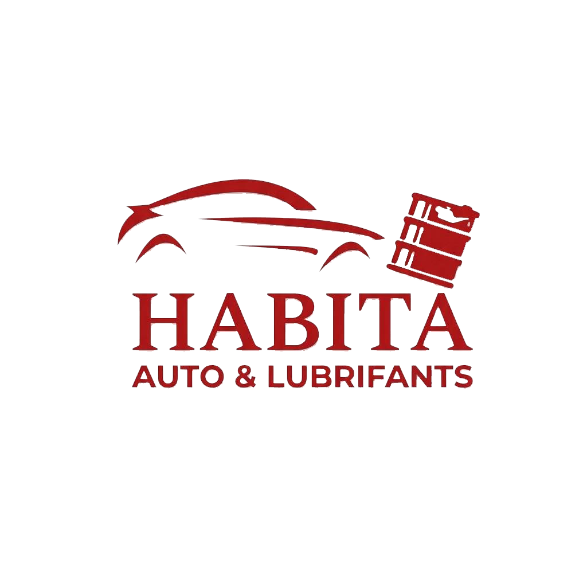
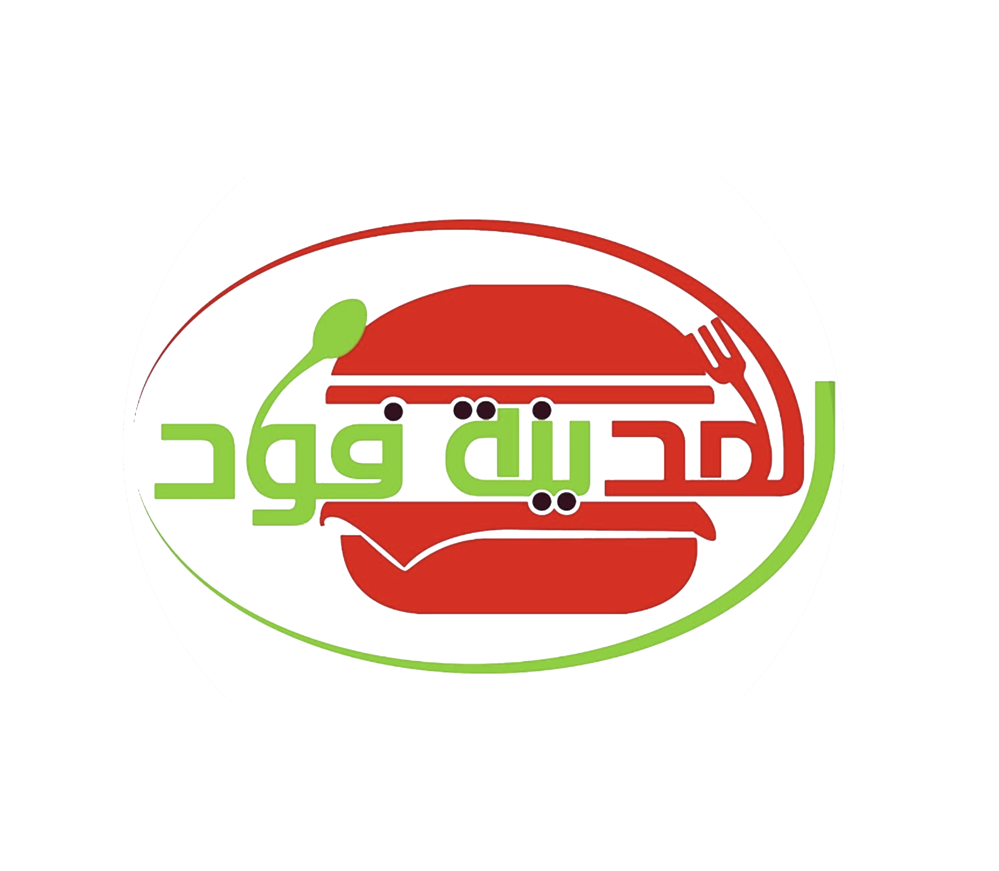
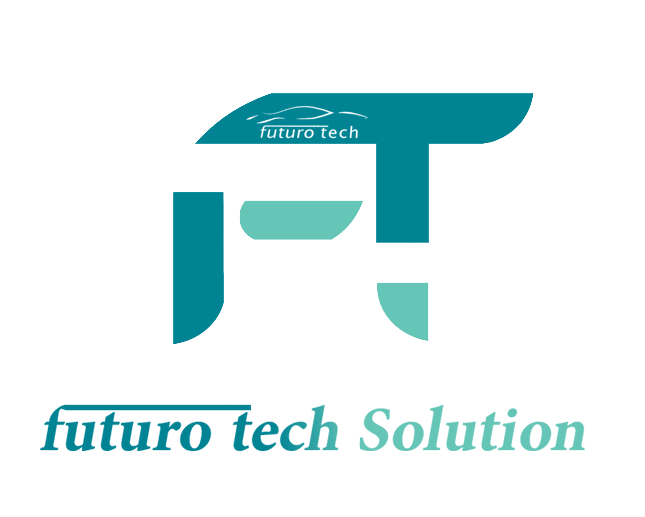
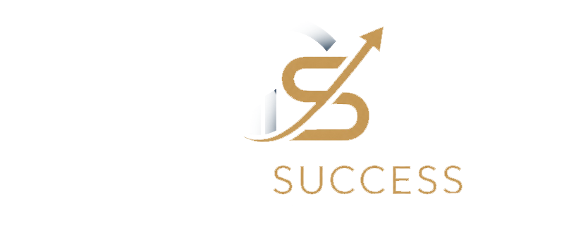

On- dessine- des- interfaces- qui- donnent- envie- d'y- revenir.
futuro_tech_design est un studio de design pour marques tech : identité, produit digital, site web. On construit vite, on construit propre.
La plupart des marques tech se ressemblent. On construit des identités qu'on reconnaît sans avoir besoin de lire le nom.
Clients & partenaires
Des indépendants aux grands groupes industriels, quelques marques accompagnées.




Ce qu'on fait le mieux
Quatre disciplines, toujours pensées ensemble pour que le produit, la marque et le site racontent la même histoire.
UI/UX Design
Interfaces produit pensées pour la clarté et la conversion, wireframes jusqu'au design final.
Sites & apps
Sites vitrines et applications web rapides, animées, responsive dès la première ligne de code.
Identité de marque
Logo, typographie, palette et système visuel cohérent sur tous vos supports, print et digital.
Motion & prototypage
Micro-interactions et prototypes animés pour tester et vendre une expérience avant de la coder.
Ce qu'on a livré dernièrement
Cinq marques, cinq problèmes différents — un fil conducteur : la clarté.
Du brief au lancement
Discovery
On cadre l'objectif, le public et les contraintes techniques du projet.
Design
Direction créative, wireframes puis maquettes détaillées sur toutes les vues clés.
Développement
Intégration fidèle au design, animations, responsive et tests sur tous les écrans.
Lancement
Mise en ligne, passation des fichiers et accompagnement les premières semaines.
« Le site a été prêt en 3 semaines et il a changé la façon dont on nous perçoit en démo. »
Un projet tech en tête ?
Écrivez-nous, on revient vers vous sous 48h avec une première direction.
hello@futuro.tech